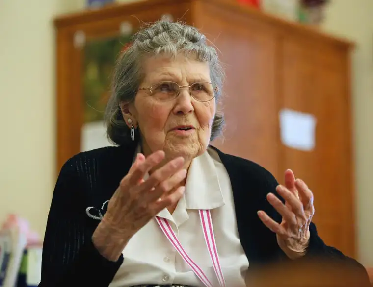

FARGO — Her ears often fail her, a blind eye requires daily drops and dimmed rooms, pleurisy sometimes plagues her, and a broken hip several years back reduced her independence some. But at nearly 95, Florence (Hektner) Jordahl is far from slowing down.

When any of her three children express needing to do more for her, she sets them straight.
“I want my sons to spend time with their wives and their kids, because after all I’ve got a lot of company — and I’m busy,” Florence insists.
There are letters to write, television sermons to watch, and people who need to learn about the Lord before it’s too late.
God’s abiding presence
Florence’s mother died just before Florence’s third birthday, and her father, a farmer who needed help raising her and her younger brother, sent the kids to live with extended family in separate homes.
Florence went to north Fargo with one set of grandparents and three aunts, or “maiden ladies.” “I was pretty spoiled,” Florence says. “I always tell people, because it’s true, God has been so good to me all through my life.”
Though the void of a missing mother sometimes made her a little sad, Florence admits, God always provided.
Florence attended a local Lutheran church, including weekly Sunday school, and memorized lots of Bible passages. Eventually, they’d return to her in a profound way.

After graduating from Central High School in 1939, she attended North Dakota State University, studying teaching and dietetics.
Her first job was at a school in Mandan, she says, “where all the bad kids go.”
“But I loved them,” Florence says, smiling. “I took them out (roller) skating in the gym, and out for walks, and luckily, none ever tried to run away from me; some did, you know.”
Two summers later, Florence was asked to fill in mid-fall at a school in Lidgerwood for a teacher who’d be getting married in November. Her yes proved fateful.
That same year, another late-starting teacher — the superintendent’s brother, Sievert Jordahl, fresh from the service — was heading in the same direction.
“After two years, he and I left to be married, on the fifth of June in 1947,” Florence says. “You see, if you help somebody, good things happen to you. I got the best husband I could ask for.”
They moved back to Fargo, where Sievert found work as a science teacher, settling in the same area where Florence had grown up near Roosevelt Elementary. Florence stayed home, cooking delicious meals and keeping their sons thriving.
A Holy Spirit moment
One evening after church, Florence was overcome with God’s presence.
“I was filled with the Holy Spirit,” Florence says. “Bible verse after Bible verse began pouring into me, and it kept up like that for hours. Even after I went to bed, it was still happening.”
The next afternoon, it finally subsided, but Florence says she had changed interiorly.
“I’d heard of people going to Assembly (of God Church) and getting the Holy Spirit, but I didn’t know what they were talking about until this happened.”
Coming before God in humility, she says, she recognized herself as a sinner needing a savior.
“A lot of people know who God is, but they don’t know God,” she says, adding that while God loves everyone, we have to love him, too. “He doesn’t jump in (without permission). That’s intruding and he doesn’t do that.”
After Sievert died from effects of a stroke, Florence continued to find meaning in life through her faith, and when a gardener helping with her yard experienced a conversion because of her quiet testimony, a new mission emerged.
“The most important thing to me now is to reach people so that they get to know the Lord,” she says. “We can’t offer anything else that’s better than that to anybody.”
Pervasive postal patron

Each month, Florence creates a new bulletin board in her room at Bethany Retirement Home for visitors to enjoy. Nearby sits a stack of copies of sermons and articles, along with stamped and ready letters.
“She loves to write letters,” says Laina Magaw, who helps tend to residents at Bethany. “All her grandkids get something every holiday and birthday, whether Scriptures or jokes, whatever she finds, usually in an envelope stuffed full of goodies — and literature.”
Florence receives letters back, too, including from pastors she follows through the media. “If she gets a letter, she’ll read it out loud and say, ‘I just found this out. See, I’m not too old to learn,’ and she’ll read me Scriptures when I’m cleaning,” Laina notes.
She says listening to Florence makes her think about life and its meaning.
“Some people are here to die, and often what they say is negative,” Laina says. “With her, it’s not like that because she knows where she’s going when she’s gone from here … I wish I had that much faith.”
Judy Wong, a longtime friend Florence considers, unofficially, her “adopted daughter,” says Florence also reads voraciously, everything from the newspaper and church bulletins to poetry.
“Florence became my support when my mom passed away,” Judy says. “She’s a caring person with strong opinions, besides being a very religious individual. Florence is sharp and alert. She knows what she wants and gets things done.”
Though the two don’t share the same faith exactly, she says, being around Florence naturally increases her own belief in God’s presence.
“What I’ve seen is that whenever Florence needs anything, God always seems to answer her need, and I see it happening to me, too,” Judy says. “A lot of people keep (their belief in God) within themselves, but Florence wants to share it with others so they’ll also have that experience.”
Florence says between lunch visits with friends, correspondences and chatting with workers at Bethany, loneliness isn’t a problem.
“The thing is, the Lord is with you always so you’re never alone. You’ve got a friend, a master, really,” Florence says, adding with a gleam. “Of course I talk to myself a lot, too. That way I always get the right answer.”
Every once in a while, a gray day sneaks in. But not for long.
“My motto on every letter I write, when people ask how I am, I say, ‘I’m fine, happy and busy,’ ” Florence says. “It doesn’t mean everything is perfect and you’re happy with everything that’s going on. But you’re happy in the Lord.”
[For the sake of having a repository for my newspaper columns and articles, I reprint them here, with permission, a week after their run date. The preceding ran in The Forum newspaper on June 11, 2016.]